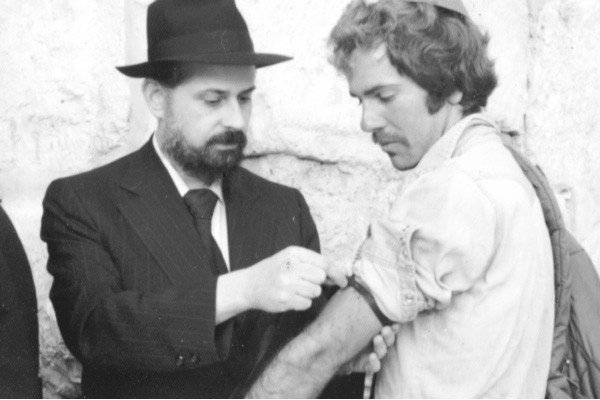

What Bothered Misnagdim About Mivtza T’fillin?
46 years ago, shortly before the Six Day War, the Rebbe announced Mivtza T’fillin. * T’fillin as the prototype for all mitzvos. * T’fillin in the head or on the head? * Mivtza T’fillin – an antidote to habit. * Another article prepared for Beis Moshiach that was discovered after R’ Ashkenazi’s untimely passing.
By Rabbi Chaim Ashkenazi a”h

Chazal said about the mitzva of t’fillin, “The entire Torah is compared to t’fillin.” In Likkutei Torah it explains the uniqueness of the mitzva of t’fillin in that it expresses the goal of all mitzvos.
How are t’fillin made? Animal hides are processed and made into parchment. Then portions of the Torah are written on them and they are inserted into boxes made of animal skin. This transforms the coarse material into an object of holiness.
The same is true for all mitzvos; they all have the same goal. The goal is to take a physical item and make it a receptacle for G-dliness. This is why the entire Torah is compared to t’fillin, because t’fillin express this idea, the G-dliness within the physicality of the world.
THE VERY FIRST MITZVA CAMPAIGN
This explains why Mivtza T’fillin was the first campaign the Rebbe announced, 46 years ago. When the Rebbe started the campaign of putting t’fillin on with every Jew, it aroused an outcry. There were religious Jews of all backgrounds who looked askance at taking t’fillin, which are holy and which have G-d’s name written in them multiple times, that require a clean body and pure hands and thoughts, and putting them on irreligious people in public areas where immodesty is rampant.
The opposition was so strong that one of these groups arranged a Purim procession led by a horse that had boxes made to look like t’fillin attached to its head and left leg. This was to highlight just how ridiculous they perceived the Mivtza T’fillin to be.
Some people wrote letters of protest to the Rebbe opposing the campaign. But, boruch Hashem, there were others who did not disparage anything initiated by the Rebbe. They considered this a wonderful campaign and a terrific tool to connect Jews to Hashem. Along with Chabad Chassidim, they too went out and did Mivtza T’fillin.
Many years have passed since then and the idea of taking holy t’fillin and putting them on with Jews on a low spiritual level seems eminently reasonable. It is no longer criticized; on the contrary, many people who are not Lubavitcher Chassidim do the same. I bet that if you told them how greatly the campaign was denigrated at first, they would not believe it possible.
MIVTZA T’FILLIN GENERATES THOUGHTS OF T’SHUVA!
Perhaps we can say that this campaign embodies the Rebbe’s approach to the fulfillment of Torah and mitzvos, which is to wage an aggressive battle to bring Judaism to the public domain. This is the Rebbe’s chiddush, that we need to bring Jewish pride to every street and corner, and there is no person or place that is too low and cannot be illuminated by the light of Torah and Chassidus.
After the t’fillin campaign, the Rebbe introduced other campaigns to accomplish the same thing: bringing the Sh’china down into the physicality of the world.
I remember that when we would return from Mivtza T’fillin as talmidim in Tomchei T’mimim and they would ask us: Doesn’t going on Mivtza T’fillin weaken your fulfillment of Torah and mitzvos? To do it, you need to leave the yeshiva, a place of Torah and Chassidus, and go out to the street which is open to all the sights this world has to offer!
Our answer was: We come back from Mivtza T’fillin with thoughts of t’shuva! When we see people who are immersed in the pleasures of this world and are willing to roll up their sleeve and put on t’fillin, this strengthens our yiras Shamayim. During the winter, soldiers had to put down all their gear and remove layers of clothing and stand in the middle of the street, ignoring the commotion all around, and concentrate on the page of Shma in front of them, standing “like a servant before his master,” until they finished saying the entire Shma. Then, they would kiss the t’fillin with reverence and love. If only we were so serious about it, and if only we had it in us to ignore our surroundings and everything the world out there broadcasts.
Mivtza T’fillin is one of the best ways to bring Hashem to the public domain. By putting on t’fillin in the middle of the street, the G-dly plan is being realized, to make Him a dwelling down here. As the Rebbe Maharash said to one of the Chassidim, that he envied him because while involved in business he meets with other Jews and uses the opportunity to say a d’var Torah. This is the purpose of the creation of the world.
Something loftier occurs when doing Mivtza T’fillin. Within the hustle and bustle and the involvement in the pleasures of this world, a person stops for a few minutes. He is actually stopping his animal soul with the entire train and loaded compartments that it draws behind it with the delights of this world. It’s a sudden stop because there is a G-d. When this Jew puts on t’fillin, says the bracha, and recites the Shma, at that moment the world means nothing to him and he does not sense that which is going on around him. This is a dwelling for G-d in the most outstanding way! Anyone who remains unmoved by this, does not understand the purpose of creation and the purpose of the Torah.
T’FILLIN IN THE HEAD OR ON THE HEAD?
In addition to everything said thus far, perhaps we can say, in a lighter vein, that the reason that all of Torah is compared to t’fillin is in order to teach us, we Lubavitcher Chassidim, how to fulfill the entire Torah. As you know, one of the things that tend to plague us is habit and routine. We turn into something mechanical that goes through the motions. The actions make no impression whatsoever on the implement in question. In other words, the machine does not become more and more refined with each action. Rather, it continues to wear down until it reaches the end of its usefulness.
But a Jew must not act like a machine when doing mitzvos. A Jew needs to become more refined after doing each mitzva. After mentioning the name of Hashem in brachos and t’fillos tens of thousands of times, it has to make an impact on him. After doing hundreds and thousands of mitzvos, after thousands of lines of Tanya, Chumash, and T’hillim that were said, he must become more refined.
So why don’t we turn into something different when we do a mitzva? It’s because we do it routinely. There is barely any connection between the doer and the deed. As the Alter Rebbe said when he was in jail and they saw the t’fillin on his head and they were stricken with fear. A Chassid asked him: I also put on t’fillin so why aren’t people fearful of me? The Alter Rebbe pointed out that the words of Chazal are “these are the t’fillin in the head” and not t’fillin on the head.
Just as when the Alter Rebbe’s t’fillin were on the table – even though they were tremendously holy, they did not induce fear, likewise – the holy face of the Alter Rebbe did not induce fear except when he wore t’fillin. This is because, when the t’fillin were on his head, there was a connection between the holiness of the t’fillin and the holy face of the Rebbe, a connection that created the result, “and they will fear you.”
This is how it ought to be with every Jew, that putting on t’fillin throws fear into the nations that see us, but since our t’fillin is on the head, and not in the head, i.e. the putting on of t’fillin is done mechanically and does not penetrate into our consciousness, therefore, the results are lacking.
The refinement that ought to be created in a Jew through his service of Hashem is not created when he does mitzvos by rote, when the davening and learning are merely words which don’t penetrate within. Consequently, the k’dusha does not penetrate. This k’dusha is meant to protect us, so that we do not slide down the slope of the pleasures of this world. However, due to the routine performance of mitzvos, they don’t affect any refinement.
MIVTZA T’FILLIN AS AN ANTIDOTE TO HABIT
When we go on Mivtza T’fillin and see a Jew stop his routine, and this Jew might be decorated with all kinds of piercings and tattoos and he still stops what he’s doing; and he does a mitzva by putting on t’fillin on his head and arm, he can serve as a powerful example for us.
This is the comparison we need to draw from Mivtza T’fillin to all the mitzvos we do: to stop the routine, set everything aside, and to focus on serving Hashem. Hashem is referred to [in Shir HaShirim] as “the king bound in rehatim” [a poetic reference to the flowing hair of his beloved]. [In Parshas VaYeitzei] “Rehatim” are troughs where water flows. Hashem remains bound when the avoda is like flowing water, symbolizing routine. The flow needs to be interrupted as we turn towards the King. We do this, says the Baal Shem Tov, by entering the teiva, the words of Torah and t’filla.
The Rebbe Rashab would say that one time he was davening in shul and there was a chazan wearing warm clothes and it was warm in the shul, but he davened coldly. In other words, the warmth did not penetrate him. It was like he put the t’fillin on his head but not in his head.
It says in Shulchan Aruch that the head t’fillin should be taken off with the left hand in order to show it is hard to part from the mitzva, for we really should be crowned in t’fillin all day. Likewise, we walk back after Shmoneh Esrei beginning with our left foot in order to show that it is hard to part from the King.
Think about it – how many times during the week or even the last month, did we find it hard to part with our t’fillin or from t’filla? Due to habit, we do not even pay attention to which hand and foot we did it with. We probably took off our t’fillin with our left hand and walked back starting with the left foot, but we did it so quickly that it expressed the opposite message.
Since our bar mitzva we are accustomed to putting on t’fillin and we are trained to do mitzvos from when we are children. In order to get us out of our routine way of doing things, the Rebbe gave us Mivtza T’fillin. When we watch a person put on t’fillin on the street, standing there patiently and gazing upon the t’fillin that he took off or had taken off him emotionally, with joy and great satisfaction, he is an example for us.
The Alter Rebbe explained the Chazal which says, “Shamor v’zachor b’dibbur echad” - that with every dibbur we need to remember the “Echad” - Hashem echad. Whenever we act, speak or think, we need to imbue it with the “Hashem echad.” In the language of our generation – the Moshiach who is the one and singular individual who will reveal the one G-d to the world in the greatest possible way.
Let us remember the Chazal, “The entire Torah is compared to (mivtza) t’fillin” whenever we do a mitzva or learn Torah. Let’s picture the person walking down the street, minding his own business (which is not necessarily holy and pure), who suddenly drops everything, rolls up his sleeve and says the bracha attentively. We too need to disconnect from what is going on around us and be completely focused on the mitzva we are doing, as though it is something new or something we haven’t done in a long time.
It says, “Moshiach will come to bring the tzaddikim back in t’shuva.” What is lacking in the service of the tzaddikim that Moshiach will have to bring them to t’shuva?
The answer given is that tzaddikim will get a taste of the enthusiasm and newness that baalei t’shuva have when they serve Hashem.
Boruch Hashem, there are numerous baalei t’shuva in our generation, so we have many role models of Jews who serve Hashem with a fresh chayus. Part of the reason for this is to draw us in as well, in anticipation of the ultimate chayus that will come with the revelation of Moshiach, who will breathe new life into our dried out bones.
But in these final moments of galus, we need to start animating our mitzvos, as the Chassidic saying goes that until you get to the inn you also need a bit of mashke, even though when you arrive there will be plenty to drink.
Beis Moshiach (staff). "What Bothered Misnagdim About Mivtza T’fillin?." Beis Moshiach, no. 881 (May 30, 2013).